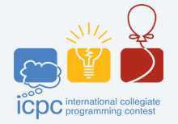

考研记录
[toc]
今天是2025年3月25日，上午看到学院的拟录取名单，不觉如释重负，那些胆战心惊离我而去。应老师和学弟建议，写下这篇经验帖子，顺便记录这一年来的生活经历。也许是氛围到此，觉得不写些东西记录这段经历，好像丢失了什么。
我考的 11408，总分 328 ，政治 53，英语 39，数学 119，408 117，初试11/35，复试3/28，上机 189/200，已成功被中国矿业大学（北京）拟录取。虽然成绩单上的分数没有那么突出，或以下内容或仅仅记录本人的心路历程，记录本人学习过程，仅供经验参考，不对任何结果负责，其中或许语言逻辑结构不是很连贯，见谅。
关于初试
英语，我的英语基础是非常差劲的（英语水平大概就是语法一点不会，只认识单词，gd学长是真正的六边形战士），暑假之前的学习基本上就是上午写一篇英一的阅读，写完之后对答案，然后查不认识的单词，记到一张A4纸上，再看B站上一位 up 的英语阅读讲解（这位：Eli田瀚博的个人空间），听他讲之后能对文章里面的长难句有个大概的翻译理解。但是这位up的每篇阅读的讲解都有至少一个半小时，所以后面大概到4、5月份时候就不看了，后来在室友的推荐下，看（这位：大道至简Loru的个人空间）up 的2011年之后的英语阅读讲解，我最受益的是这个 up 的英语单词整理，他把每一篇的常见单词整理出一本pdf（在这：大道至简Loru-完整版词汇书），把他打印下来，写完一篇阅读之后背背单词，把自己不认识，经常忘的单词或者熟词异意也记在上面，在晚上闭馆前完成今天的任务后有时间也会再看看，单词还是非常重要的。国庆之后开始每天上午一套数学卷，当天中午或者是第二天把错题纠正一下，下午写 408 真题，晚上写英语的小三门外加学一些英语作文的句子和政治。
数学，数学用的是张宇的基础30讲，我个人感觉25版张宇基础30讲还是非常不错的。基础到7月中旬结束，印象最深的还是高数 仅数一 多元积分那，刚开始学的时候几种积分方式真是一脸懵，后来画思维导图分类一下，先确定积分类型，再套公式，好像也就那么回事；线性代数也是全程张宇；概率论与数理统计，因为大三下有概率论的课而且这个时候张宇概率论还没更新，所以我概率论前前后后看了好几个老师，有余炳森，李良，方浩，都看过一点。可以根据适合自己的风格学习。数学一定要写题，根据自己跟的老师选习题册。从7月底开始看张宇的强化课，对我来说强化课是有点难的，强化书上的例题仅仅写了张宇圈出来的那些题，1000题强化篇全部写了，可能比强化书上的稍简单，更多的还是回忆公式以及对应题目的解题方法。国庆节后开始写真题，先写了21-24年的，再从20年开始往前写，写真题时可能会感到熟悉，但是也不会说见到熟悉的就跳过，也要认真计算确保每一步都是正确的。后面模拟题写了24、25《张宇4套卷》（比张八简单），合工大共创超越10套就写了第一套，还参加了 姜晓千 的万人模考（9.9元4场考试带人工批改），均分90左右，读者也一定不要觉得模拟的分数就是你的实际水平。
对于经常犯的计算错误，要在平时习惯中尽量改正，比如本人经常在计算过程中算着算着系数就丢了，可以将暂时不参与计算的系数或者常数打上标记，画个符号标记提醒一下，在该题计算结束后从头至尾再看一遍计算过程是否漏掉了系数。考试时给的草稿纸大概有4张A4纸那么大，完全够用，一定要划清每道题的演草界限，也方便最后检查。到这里就不得不说一下我今年考的数学了，简直就是一坨shit，列出我的罪证，读者引以为戒：第17题：心中默算漏掉系数$ \frac{1}{5} $；第18题：脑子抽抽的计算积分$ \int{\ln x}d\ln x $的结果成了$ \ln |\ln x| $；第20题：题中空间圆投影到坐标平面应为椭圆，直接按圆计算。。。可能考场上真的有降智buff，一定要注意平时的做题习惯T_T。
统考408，用的王道的书。在考试范围内，除了计组难一些，其他三门还是容易理解的，主要还是内容太多，容易忘，所以要多重复。在第一轮复习中，主要还是看王道书，写课后题目，王道的视频看的不多，其实像数据结构，操作系统，计网，计组这些课特别是计组，操作系统，在大三上学期刚学过，第一轮看书的时候不太需要看王道的视频课，直接看书可以回忆起绝大部分知识点，哪部分实在是抽象或者书上写得乱七八糟再去看一下视频讲解，也不一定是一棵歪脖子树上吊死，B 站上也有不错的视频针对一个知识点的讲解。有时候王道书上的题写不对也不要怀疑自己的能力，课后的练习题有的确实是shit。
在差不多到8月中旬才把四本书看一遍（基本都是晚上的时间学408，然后周六闭馆早回寝室玩去了，有时候晚上出去吃饭了:stuck_out_tongue_closed_eyes:，有点时间都去玩了T_T）。第二轮复习强化看了王道咸鱼的课，主要是针对大题的专题讲解，但是除专题之外的小知识点还是需要自己去再重温。我在第二轮复习时，把咸鱼的基础课 ppt 做思维导图打印装订成册（单面打印），在复习的时候遇到遗忘的直接翻这个思维导图，清晰明了，同时在写题时遇到易错或者没有复习到的知识点可以记录在对应思维导图页的背面便于查阅。在复习对应的科目时，结合对应的逻辑来记忆。每种新旧技术的迭代，都是对实际应用问题的解决。
今年（25年）在考场上看到某些题有种熟悉的感觉，有些不过是以往真题的变形罢了，总体来说比较常规。这里贴一个408真题详解，目前作者还在继续更新：408历年真题解析（草稿） - 知乎
政治，政治可以尽早开始。不然考前两周真的很焦虑:confounded:。25年的政治情况相信大家也略有耳闻，可以关注一下肖秀荣、徐涛老师关于政治考研形势的微信文章。这里就不写我的反面案例了。
最后，如果考408要注意总体上的时间分配，不要学鄙人：【数：408：英：政 = 5：2.5：2：0.5】
考试期间心态也很重要。
关于竞赛

首先要表达一下对社团指导老师的歉意，辜负了刘老师的期望，没有取的过好的成绩，但是在学习算法竞赛的过程中，也算是收获颇丰，受益良多。
算法竞赛涉及到常用知识点与数据结构这门课有高度的重合，对大多数考自命题的学校来说数据结构也是必考之一。就我个人来说，也就是刚入门的水平，对一些常用的基础算法都还了解，已经涵盖大部分数据结构知识点，剩下涉及到图中的关键路径，树部分的B、B+树的性质，平衡树，红黑树的性质等在算法竞赛中不是很常用的知识点需要额外的再仔细学习。如果能够在大一大二比较轻松的时候学到这些，在面对408或者数据结构课程时可能会更加的从容；而且在大一大二训练成绩不错可以参加蓝桥杯，百度之星；如果能够通过校内选拔赛还有：天梯赛，ccpc，icpc省赛、区域赛。
408数据结构部分大题也一道12分左右的算法（或数据结构）题，要能够说明解题思路，手写关键部分的代码，并说明空复杂度。其考察内容不出竞赛所学知识。认真训练过肯定是对这道题手拿把掐。并且对于复试需要上机的学校来说，有过算法竞赛的基础，对于上机试题也是相对来说更加有优势。而且其实大部分学校的上机考试是比平常算竟训练的题目简单一些，都是比较常规的模拟题加上一些基础知识点，毕竟要考虑大多数人。比如本人复试面试一坨shit，自我介绍疙瘩，英语文献翻译不顺，老师提问回答不上来，面试完都没心情玩了，直接订票滚蛋了的情况，依然依靠上机（差..AK）复试第三。
做题是一个非常有意思的过程，但是可能确实是需要坐一定的时间的“冷板凳”才能看出成绩（正面例子：gd学长:XXX...，反面例子：鄙人: x），但是他带给你的是你在面对难题时的思考方式上的提升。
关于经历
可能大部分人到复试的时候项目经历只有一个毕设，这里介绍一个 南京大学 的非常有意思的选修课《PA实验课》，仅需C语言就可以学习到一个完整的项目，在学习的过程中学习解决问题的方法。在B站有这门课的完整教学视频（更重要的是动手做）：NJU-why老师-PA实验课；以及南京大学jyy老师的操作系统课程：NJU-jyy老师-操作系统
最后，祝愿各位都能考上自己的目标院校。